主力与交互新版（v5-zhi、v10–v19）
统一采用本地分片思源宋体（SHU Serif）与真实学院报道数据，适配电脑宽屏与手机窄屏
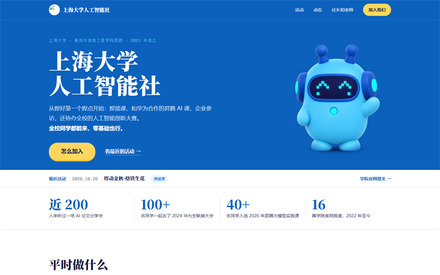
小智·焦点版
v5-zhi
当前线上默认
钴蓝首屏聚焦吉祥物小智与「怎么加入」主按钮，六大内容板块用清爽列表排开，一眼扫完。
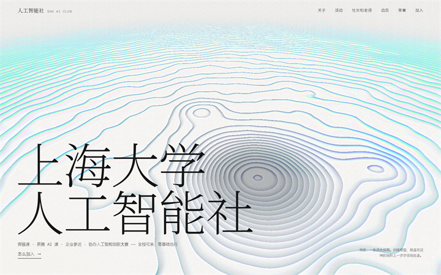
损失曲面地形
v10-terrain
三维曲面
以模型训练的损失曲面三维地形作首屏背景，下滑时镜头俯冲入谷，五类活动卡片横向展开。
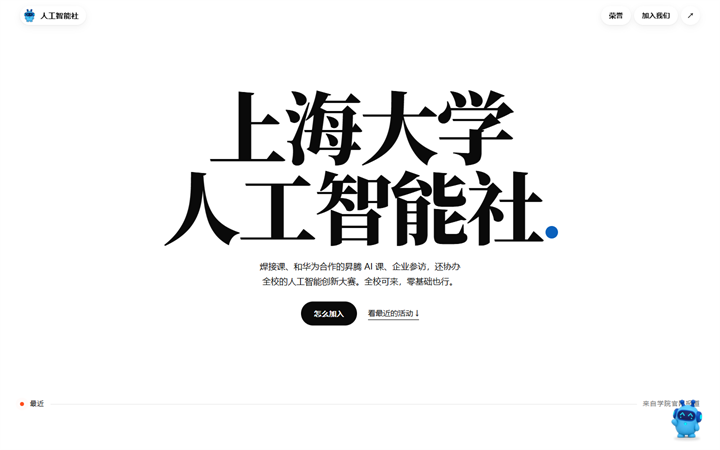
弹性飞字与小智挂件
v11-kinetic
动态排版
大标题逐字弹性拼合入场，配报道瀑布流、五年刻度盘和右下角可拖着甩的互动小智挂件。
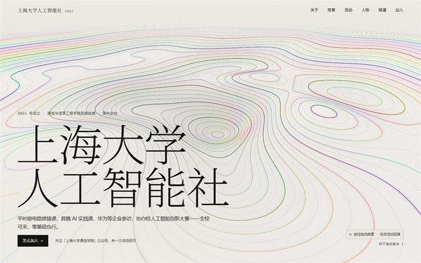
等高线薄膜
v12-contour
按压波纹
浅灰胶片颗粒配彩虹薄膜等高线曲面，按住拖动会压出回弹波纹，滚屏俯冲转入深色分区。
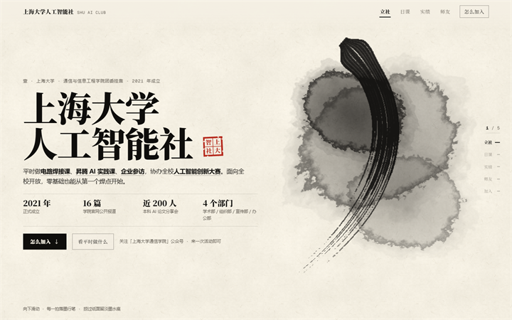
宣纸水墨
v13-ink
行笔晕染
米白宣纸纹理配毛笔飞白、浓淡晕染与朱砂印章，每次下滑如行笔落墨，章节在留白处展开。
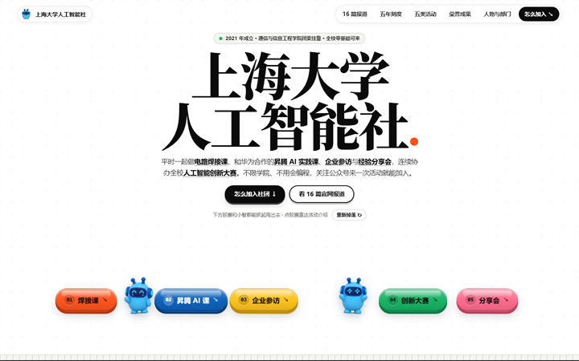
物理玩具盒
v14-toybox
碰撞胶囊
首屏掉落五类彩色活动胶囊与小智摆件，支持抓起甩出碰撞，下方配吸顶五年刻度尺与横向大卡。
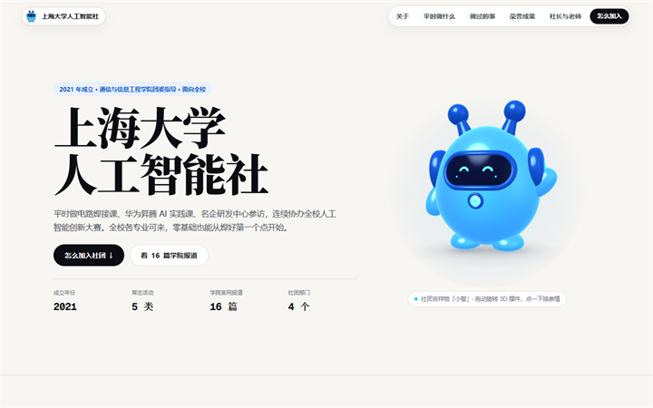
立体小智摆件
v15-object
三维摆件
首屏悬浮手写三维渲染的小智桌面摆件，可拖动旋转并点按换表情，滚屏时停靠侧边陪伴导览。
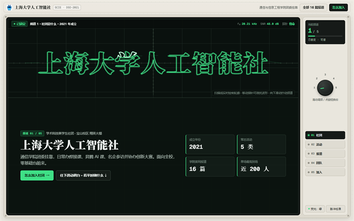
通信示波器
v16-scope
调频锁波
整页化作通信学院本行的精密示波器面板，下滑如同拧旋钮切换频道，波形锁定后呈现各节实绩。
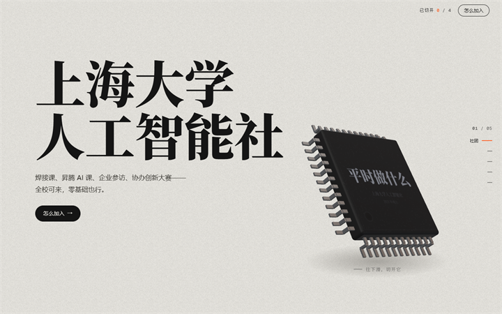
一刀切开
v17-slice
滑动切物
每滑一拍就有一道刀光切开抛起的芯片或电路板立体物件，两半飞开后从切口展开社团内容。
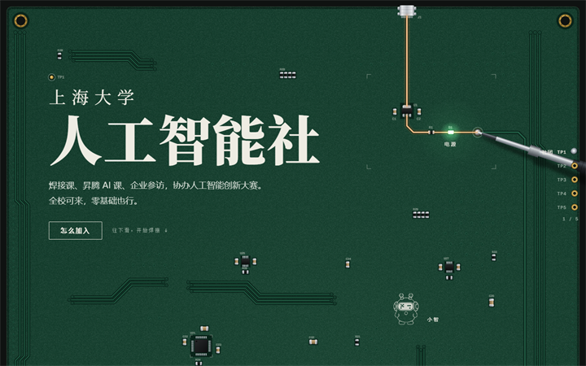
电路板焊接
v18-solder
烙铁走线
俯视一块精密电路板，下滑驱动电烙铁沿铜线焊亮焊点与元件，呼应社团招牌焊接实践课。
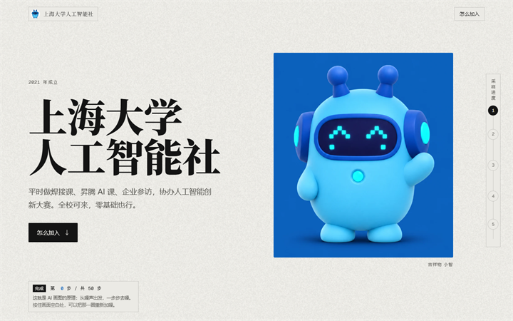
扩散去噪
v19-denoise
逐步显影
把下滑变成生成式画图的去噪过程，满屏颗粒噪点随滚屏一步步退去，清晰显影出小智与正文。
早期版式与互动实验留档（v1–v4、v6–v9）
记录从早期三套主题版式到互动实验的完整演进过程
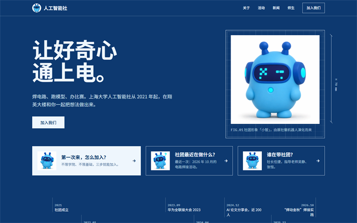
工程蓝图
v1-blueprint
早期方案
普鲁士蓝工程制图纸配白色尺寸标线，按年份比例排布历年活动时间轴与分类新闻登记表。
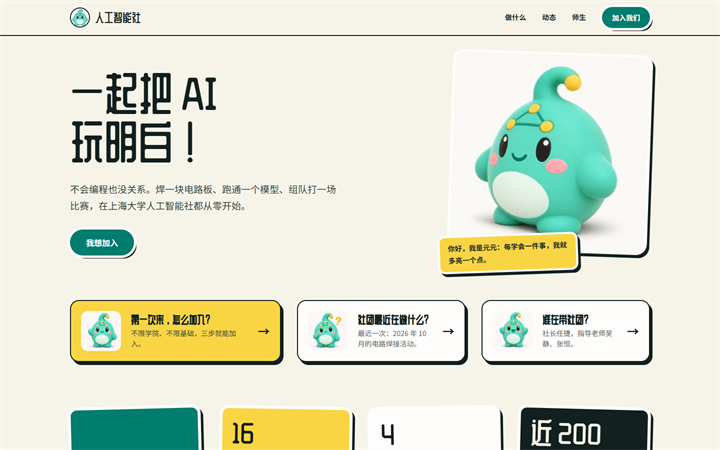
模切贴纸
v2-sticker
早期方案
暖白纸面配模切白边硬投影与「元元」形象，突出招新导流卡片、焊接课四步图解与部门选择。
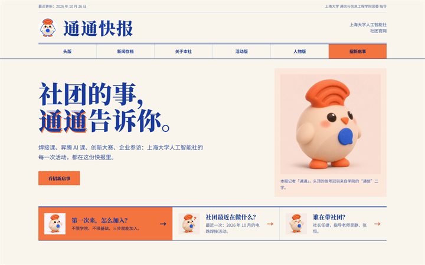
通通社刊
v3-riso
早期方案
双色孔版印刷「通通快报」报纸版式，主打头版头条报道、按年份归档筛选与关键词高亮搜索。
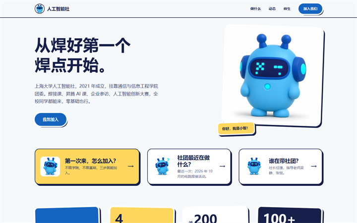
小智卡片版
v4-zhi
早期方案
沿用清晰卡片版式并换上小智天青钴蓝配色，首屏下方设三路按访客目的分流的快捷入口。
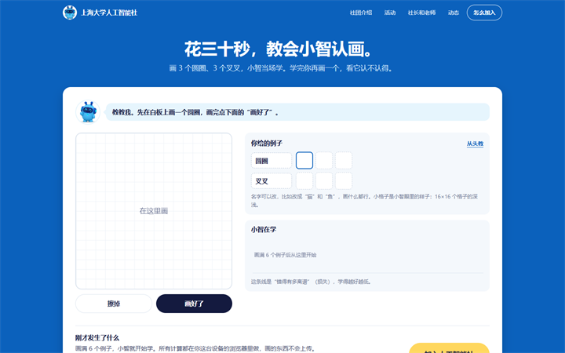
手绘教学实验
v6-teach
早期实验
首屏内置画板让访客手绘正负样本、实时训练小智分类器的早期互动实验留档。
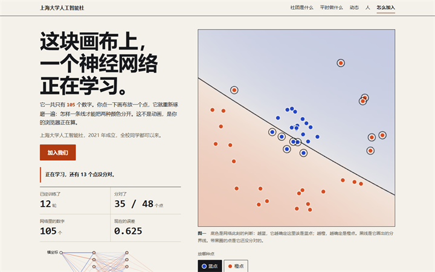
分界线实验
v7-boundary
早期实验
首屏实时演示小型神经网络在二维平面动态弯曲划分数据点边界的早期互动实验留档。
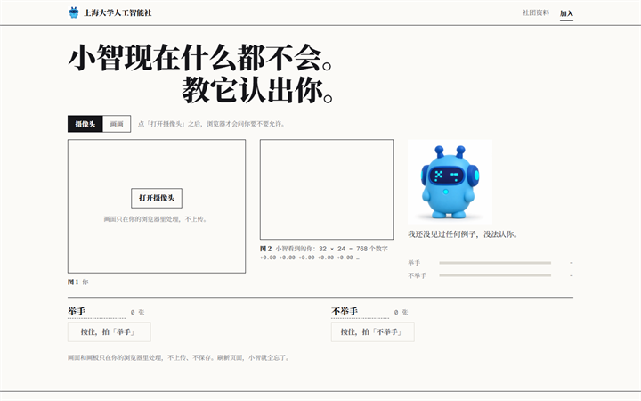
小智识人实验
v8-zhi
早期实验
结合近邻分类器互动实验与独立全量资料详情子页的早期探索版本。
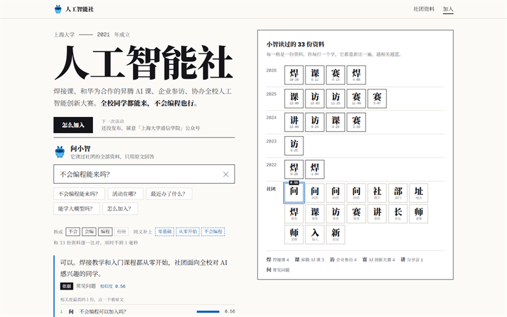
社团问答实验
v9-ask
早期实验
首屏支持点选或输入问题检索社团资料，并配独立完整详情子页的早期探索版本。